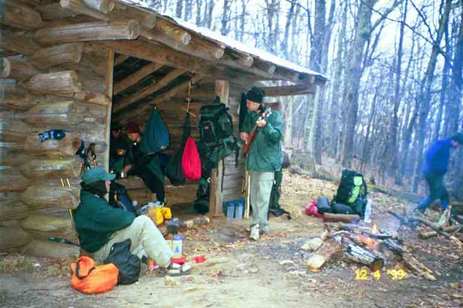

The road walk up from Mountain Mommas drained us but after a short rest we were on our way again. The trail was relatively flat for the first mile as it went through a wooded area eventually arriving at the slow moving Pigeon river. We followed the river for some distance. It was dark and beautiful along this stretch of trail with the sound of the gurgling river at our side. We found SEABASS filtering water at the campsite next to the river. He said he would not be staying here because the Interstate was less than half a mile away which could be a problem for noise and intruders. We agreed and we all went on.
We came to a country road. White blazes painted here and there on signs and guard rails lead us down the road to the east and then under the Interstate. The blazes were our guides but they were so small and far between that they would not be noticed by non hikers. We had to look hard to find some of them. During our trip, we crossed many Interstate highways (and some more than once). It was usually accomplished by having the trail come out of the woods to a road which went under or over the Highway. A few times there was a foot bridge built over the Interstate.
Just beyond the Interstate, we came to a wooden stairway leading from the road up an embankment about 30 feet high. At the top of the stairs sat PHIN and SONGBIRD drinking beer. They had obtained them from CANEBREAK who had met his wife at the Interstate and was now going to take a few days off. MA and I took a break and the other three went on. We then hiked about a half mile through the woods to a rocky road with a high rock face cliff on the other side.. We were unsure which way to turn but we finally noticed a blaze on a tree way down the road to our right.
The trail went back into the woods and immediately started climbing. There were switchbacks but the trail was still very steep. It was very hot and we were very tired. We could hear the sound of traffic on the Interstate as we climbed. Then my waterbag went dry. I stopped and checked it. It was empty. I took out MA's bag and found there was not much water in hers. We were both thirsty but realized we should ration water. There was no water until our destination campsite at Painter's Branch, about 2.5 miles away. It had been short-sighted of us not to have obtained water at the river when we met SEABASS.. It was our first really hot day and we had not realized that we had been drinking more than usual.
The path quickly climbed 1000 feet and then levelled off. It then hugged the side of a slope as we contoured a number of gentle hills. As we rounded each corner, we had the hope that we would find water trickling out of the hillside near the trail, as it sometimes did. But there was no such luck this time, perhaps because we were on the south side of the hills. We stopped a few times for breaks and shared MA's water. We finally ran out of water and we seemed no nearer to our goal. Looking back on that day, we were probably overly concerned.
After nearly 2 hours from the road, the trail started climbing again. Then we thought we heard the trickle of water.. We increased our pace. We finally came to a spot where a number of hikers had set up their tents adjacent to the trail on a tiny island formed by two branches of a little stream. Technically it was an island because it was surrounded by water. We got to it by walking across a 3 foot wide, 2 inch deep stream. The first thing we did was soak our bandannas in the deep pool on the other side and cool our faces and heads. I then filtered a large quantity of water which we drank immediately. We decided to tent with this group after they assured us that there was room for us. We set up our tent in the only available spot, obstructing the way back to the trail and crowding other tents. One corner of our tent was over a large root.
The campers were PHIN, SONGBIRD, SEABASS, SLIPPER, MANY SHORTS (he had started the trail with 7 pairs of underwear) and POTATO PICKER. Attached is a picture showing some of the group at this campsite. POTATO PICKER emailed this picture to me recently. SLIPPER is talking to MA and PA, PHIN is working on her tent, SONGBIRD is in the foreground and MANY SHORTS is standing.
We made supper and socialized while MANY SHORTS lit a fire that SLIPPER had built. POTATO PICKER told us he was hiking a fast pace because he wanted to get back home to see his son before school started. He was recently separated and his wife had custody. It seemed like the hike was to give himself the opportunity to think about his life. POTATO PICKER would make it all the way and would climb Katahdin with his three children on August 20.. His partner MANY SHORTS would leave the trail before the end of April. .This was the only time we would see the two of them.
After supper we walked a short distance back down the trail to find a spot to hang our food out of reach of the varmints. As per usual, SLIPPER went to bed early and most of us followed shortly after.
--------------------------------
SLIPPER is another hiker with a journal at trailplace.com. Here is her version of the hot climb and the campsite at Painter's Branch. She seems to have written this journal entry while in her tent at this campsite: (Journal is no longer online)
**"Then, after crossing I-40, I found myself on a relentless climb up Snowbird Mountain. It wouldn't be so bad, except it was so _hot_. I found I was drinking far more water then usual. I filtered some after about 2 miles, drank that did it again before I reached this spot this afternoon. I've come 4 miles up this hill, with 2 left to go tomorrow to the summit. This campsite is so sweet, I couldn't resist. It's situated on an "island" (ie. surrounded by the creek on all sides). I thought I was going to be alone here at first, but after about an hour, more weiry, thirsty hikers stopped to stay Many shorts, Ma, Pa, Sea bass, Fin, Songbird, and Potato picker. I had put together the making for a campfire, & we're all packed in the small space, tents almost touching they're so close together! It's really neat to know that no matter what, there's room for everybody. I enjoy this group. Ma & Pa are just wonderful. They both speak French as well as English. After the sun finally went down we all sat and talked around the fire. The bugs were _awful_! I got at least 20 bites. I rinsed out my T-shirt in the creek, but it didn't do much for the smell. I also filled my cooking pot with water several times and splashed it over my head. AHH."**
-----------------------------
The next day we were still tired and decided to hike only 5 miles to the next shelter. There were a few good climbs as we went up Snowbird Mountain and we took a number of breaks. After each break, the muscles in my thighs seemed to lock up and I limped for a short while. SEABASS came along and offered me some Ibuprofen. He had quite a supply and gave us enough for a few days. The pills worked wonders.
This was my first experience with Ibuprofen (some of the brand names are Motrin and Advil). It is a pain reliever but also is good for muscle aches and joint inflammation. It was quite popular with some hikers, especially those with knee problems. It was nicknamed Vitamin I. Everyone was aware of the recommended dosages because one of the side effects could be liver damage.
During one of our stops SEABASS told us more about his girl friend Aimee. He told us how wonderful she was and how he had pursued her for a long time before she finally agreed to go out with him. They now lived together and he had not seen her since the start of his hike. He was worried about her because she had a new job and was a little apprehensive. She was driving from Chicago to see him in Hot Springs, two days away and he had reserved a room at the Alpine Inn, the only motel in town. I think everyone on the trail knew that Aimee was coming.
Around noon the trail started a gradual 1000 foot descent into a valley, hugging the side of the hill and contouring the valley as it went down. We came to a blue blaze trail which lead 0.2 miles to Groundhog Creek shelter in the bottom of the valley. The side trail descended through the trees and emerged into a flat little clearing surrounded by woods. The shelter backed onto a hill and faced the open grassy area which sloped gently down to a wooded area. The blue blaze trail went passed the shelter and into the woods. A sign indicated that water was in that direction. I went to investigate and discovered a number of beautiful tenting spots and a clear cold stream.
It was early but we were staying here. MA and I claimed our spots in the shelter by spreading out our sleeping pads and bags. We ate our lunch and relaxed, reading the register and looking out over the valley. SEABASS left not long after lunch. A couple of hikers came by for a break, including SUNNY P. She was a slim young woman with a very large backpack.. She ate humus and shared some with us. I think humus is a pea or bean product.. It is a good protein source and is eaten by vegetarians on the trail. They carry it in powdered form and add water to make a paste. They spread it onto pita or bagels or crackers. SUNNY P said she sometimes added it to pasta dishes to thicken the sauces and provide protein. After her break, she effortlessly threw the heavy pack onto her back and strolled away at a brisk pace.
Not long after, we were hit with a heavy rain storm lasting about half an hour. Although it was not cold out we were glad to be in the shelter. As MA and I lay relaxing in the shelter after the downpour, a memorable event occurred. From where we were, we could not see the approach trail. All of a sudden a hiker appeared and shuffled over to the picnic table about 15 feet in front of the shelter. Something just did not seem right about him. He made me nervous.
He was carrying an enormous black backpack with a black rain cover over it, making it look even larger. Hanging from the hip belt and dangling in front of his crotch, was a long sheathed knife. He removed his pack and placed it on the bench of the table. He took a pack of cigarettes from his pocket and lit up. He was in his late thirties and had a few days growth on his face. He was wearing a loose fitting, white, dirty, torn t-shirt with the arms torn from it at the shoulders. He stood there very ominously. He was drenched from the rain and his long hair was wet and unruly. Thru hikers are certainly not the height of fashion but this guy looked more bedraggled than most and did not seem to be part of the hiking community. Actually he looked more like a fugitive who was living in the woods.
He opened up his pack took out something dry to wear and found something to munch on. I don't recall him saying much but he did say that his name was BALTIMORE JACK He finished his cigarette and immediately lit another one. He took out a trail map and studied it. When he finished his second cigarette, he turned his back on us and dug through his pack. He seemed to fish out a small flask. Keeping his back to us he took a swig and placed the item back in the pack. He repacked his gear, put his pack back on, lit a cigarette and shuffled away. I will have lots more to say about BALTIMORE JACK later. Attached is a picture taken of him by SINGLEMALT in August at a frat house in Hanover NH.
By late afternoon we had been joined by a large number of people, including Matt and Bill who did not have trail names yet. A dark skinned young man came into camp and without pausing, asked if anyone had toilet paper. Bill dug out a full roll, threw it at him and told him he could keep it. The young man hurried off to the privy. This was our first meeting with WOODPACKER, an Israeli who appeared to be of North African descent. He returned from the privy saying it was really bad and should be used with the door open. I agreed with his assessment and furthermore I found the view with the door open to be relaxing.
RAINDANCER and M&M arrived and set up their tents in the woods at the bottom of the slope in front of the shelter. IRMO and LITTLE DIPPER soon joined them. Woodpacker set up his tent in the woods leading to the water source. As we all sat around making supper, ARIZONA announced that it did not look like rain so he would be sleeping on the picnic table, and he did so..
T-ROY was a young engineer who had worked for the PUR company which made the most popular water filter on the trail. He had quit his job before beginning his hike. Someone asked about his stove and he explained how he had designed and built it himself.
I watched GREENFOOT use his most unique cooking method. He emptied a Lipton pasta envelope into a large zip-loc bag. He then carefully added boiling water, closed the bag and placed it into an insulated aluminum foil bag, which he closed tightly.. He waited about 20 minutes and when he opened the bag, his meal was ready. The advantage was that he could conserve fuel because he did not simmer the pasta. He also did not dirty a pan or dishes.
Matt and Bill had been friends for a long time. Bill had been Matt's scout leader, and more recently they were both leaders together. Matt would only be hiking until June when he would be starting a job with an investment firm. He said he loved to wear a shirt and tie and was anxious to start his job. Matt teased Bill about the number of photos he had taken. When I said I had only taken 17 shots to that point, he said that Bill had already taken 17 rolls.
We had seen and heard a number of aircraft and helicopters over the last few hours and a few people said that there was a forest fire, not too far away. There was a smell of smoke in the air. The authorities knew the trail went through this area and would provide a warning if there was danger. We would smell some smoke the next day and we saw a little smoke in the distance but there was no problem for us.
The walk the next day was cool and windy. We started at 3000 feet and climbed and dropped a few times as we walked mostly through woods for the first 5 miles. We crossed Max Patch Road at the 4300 foot level. Just below the road we found cans of pop in a cold stream. They were a store brand called Simply which we later came to recognize as FANNY PACK's brand. This would not be the last trail magic from him. He is a 1996 thru hiker from Virginia who is one of the most well known Trail angels. At this time of year he comes down south and provides help and snacks. He usually goes north with the main group of hikers. We would meet him a few times and now I get regular emails from him.
We were at the base of Max Patch, a well known trail landmark. It is a 392 acre grassy-top mountain which was originally cleared by homesteaders for grazing sheep and cattle. It is now maintained by the forest service using mowing and controlled burns. We followed the path through the woods and then started climbing, finally coming into the open at the edge of an expansive grassy area. The trail switched back and forth for a half mile as it climbed to the 4600 foot summit. It got colder and windier as we approached the top. We had problems standing at times. At the summit we could see for miles. The summit is so expansive that it was once used as a landing spot for planes. It is now a favorite picnic and kite flying spot. We later heard stories of hikers who tried to spend the night on top of this mountain in a strong wind storm. I have attached SINGLEMALT's picture of that group camping on Max Patch. The winds went up to 75 mph that night, making their life exciting.
We went down the other side of the mountain, through a campsite in the woods below the summit and then came to a well travelled path lined with high thick rhododendrons. We stopped here and had our lunch break away from the wind. During the afternoon we went back into the woods and came upon a group of older day hikers who were stopping and looking for some of the spring flowers that were beginning to appear. The attached picture shows MA in this area walking along the side of a hill. This was typical terrain during the early days of our hike.
We came to the beautiful new Roaring Fork shelter situated in a sheltered little ravine near a stream. We did not stay because it would leave us with a very long walk into Hot Springs the next day. We continued on to Walnut Mountain shelter which was 2.5 miles beyond and 800 miles higher up, on top of a mountain.
The shelter is said to be the oldest one on the trail and is situated right on the trail. It only sleeps 5 but we were early enough to get a spot. The shelter was right on the ridgeline facing a wooded ravine. Fortunately the wind was coming from the back. There were holes between the boards in the back wall but most were stuffed with cloth, plastic and pieces of foam. The floor of the shelter was about a foot off the ground, and there were spaces between the worn uneven planks. CHECKDAM lent us a sheet of plastic to place under us to stop the cold wind from coming up. CHECKDAM is a thru hiker who has done lots of trail maintenance on the trail in Virginia. His trailname is the name given to the logs that are placed partially buried across the trail in steep slopes, to stop erosion.
I went down the soft steep trail behind the shelter to get water. I was joined by RAINDANCER. The ground around the spring was muddy, making it difficult to find a spot to filter. Normally I would be able to find a dry spot or rock to sit but here I had to get into a painful crouch for about 10 minutes to filter enough water for our needs. I got my boots wet in the process.
The privy was on the other side of the mountain, and about 100 feet to the right. It could be seen from the front of the shelter It had walls on three sides which were about three feet high starting about 2 feet from the ground. There was no door and as you can imagine, it was quite draughty. Users would do their business quickly on cold days like this. The privy provided users with a great view of the ravine. Because of the walls you could tell if it was in use.
We had a quick supper, started a fire and got in our bags to get out of the cold. There were many people here, most of whom had to tent. RAWHIDE stopped by and then went on a little further to set up his tent. The attached photo shows IRMO serenading the hikers. His wife LITTLE DIPPER can be seen on the edge of the shelter making supper and BEARPAW is leaning against the outside shelter wall, his stove between his legs. WOODPACKER is walking at the edge of the photo. It clearly shows that we were in for a cold night. Notice also the foodbags hanging from the mouse hooks and the backpack hanging at the entrance of the shelter.

The next day we would be off to Hot Springs, the first town that the trail goes through.